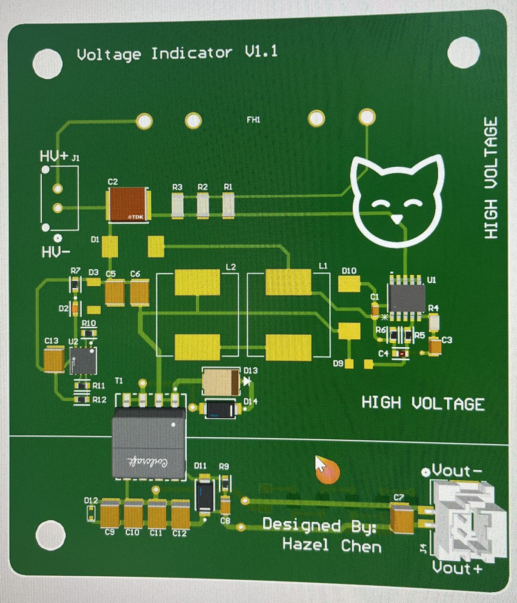

High Voltage Indicator Light
FSAE rules require an indicator that lights whenever the tractive system is above a set voltage. I designed a board that powers itself from the tractive bus and outputs an isolated 12 V, so a standard low-voltage panel-mount light can be mounted anywhere on the tractive battery.
- Tools
- Altium Designer
- Key parts
- STMicroelectronics VIPer06, TI LM25180
- Isolated output
- 12 V from a 10–30 V intermediate rail
- Team
- Virginia Motorsports (UVA Formula SAE EV)
Why not just an LED?
The simplest indicator is an LED with a diode and series resistor across the bus. The problem is that the resistor has to be sized for the full pack voltage, so at the minimum voltage where the rules say the light must turn on, only a small current flows and the LED is very dim. Instead of trading brightness at one end against dissipation at the other, I used a switching supply that delivers the same output regardless of pack voltage.
Design
The board has two stages:
- VIPer06 buck converter. The STMicroelectronics VIPer06 is a high-voltage converter that runs directly off the tractive bus and steps it down to a low-voltage rail. This stage is based on Rootthecause's open-source HVI design.
- Isolated flyback. A TI LM25180 flyback converter takes that 10–30 V rail and produces an isolated 12 V output for the light. Because the output is isolated from the tractive system, the light and its wiring are ordinary low-voltage parts.

Replacing the isolated module
The first revision used an off-the-shelf Murata isolated DC-DC module for the isolation stage. In testing, the light would turn on for about half a second, shut off, and then repeat, so it never stayed on. Something was tripping a protection circuit and restarting. I had already designed an isolated flyback around the LM25180, so I wired it in place of the Murata module, and the light stayed on. I haven't pinned down the root cause yet, so I moved the flyback onto the board for V1.1.